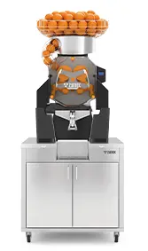
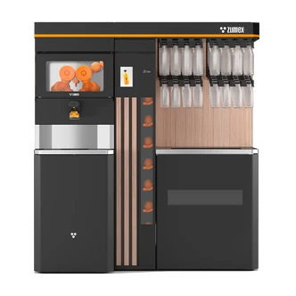
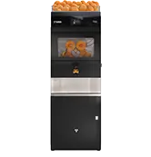
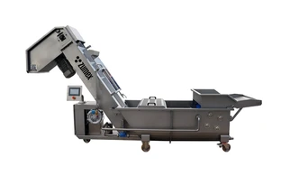
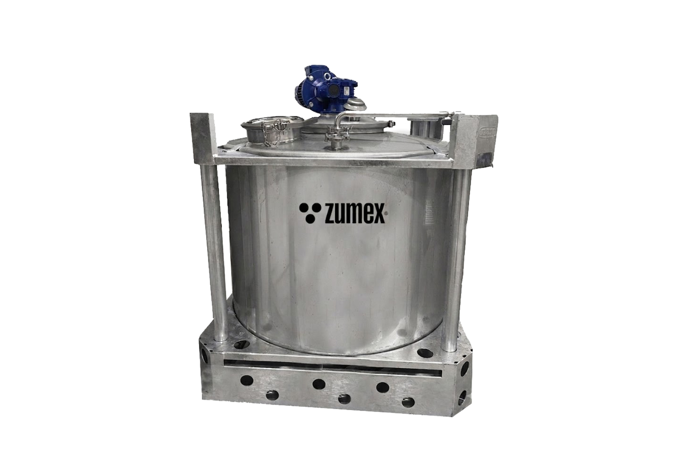
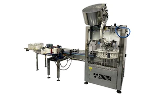
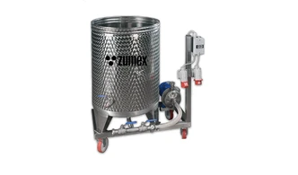

Katalog profesionálních lisů a odšťavňovačů Zumex
Od první sklenice za barem po celou výrobní linku. Vyberte si podle suroviny, intenzity provozu a způsobu použití.

Soul Series 2
Soul Series 2 přináší automatické lisování citrusů i na bar, kde je každý centimetr důležitý.
- Výkon M/S18 plodů/min
- Výkon XS36 limetek/min

Minex
Minex je automatický pomerančový lis pro provozy s mírnější spotřebou: malé kavárny, pekárny i hotelové snídaně.
- Výkon13 pomerančů/min
- Zásobník6–7 plodů

Essential
Essential je řada pro každodenní přípravu čerstvé citrusové šťávy v gastronomii.
- Parametry proEssential Pro
- Výkon22 plodů/min

Versatile
Versatile spojuje automatické podávání citrusů s větší autonomií než ručně doplňované stolní lisy.
- Výkon Basic / Pro22 plodů/min
- Zásobník Pro16 kg

Speed Up
Speed Up je určen pro intenzivní výdej čerstvé šťávy v obchodech, velkých bufetech a vytížených gastroprovozech.
- Výkon40 plodů/min
- Zásobník20 kg

Speed S+plus
Speed S+plus je řada pro samoobslužný prodej čerstvé šťávy a provozy s velmi vysokou poptávkou.
- Výkon40 plodů/min
- Rozsah ovoce s příslušnými sadami45–95 mm

Speed Pomegranates
Speed Pomegranates je specializovaná řada pro šťávu z granátových jablek.
- Výkon30 granátových jablek/min
- Zásobník20 kg

Zitrux
Zitrux je kompletní samoobslužné řešení pro prodej čerstvé citrusové šťávy v supermarketu.
- Zásoba ovoce75 kg
- Kapacita odpadu120 l

Zitrux Compact
Zitrux Compact přináší samočisticí technologii do menšího prodejního prostoru.
- VýkonAž 40 plodů/min
- Nepřetržité zpracováníAž 30 kg ovoce

Multifruit
Multifruit rozšiřuje nabídku o šťávy z ovoce i zeleniny: od jablek a mrkve po okurku, ananas nebo zázvor.
- Zpracování suroviny120 kg/h
- Orientační průtok1,8 l/min

Pineomatic
Pineomatic je automatický kráječ ananasu pro prodej hotového čerstvého ovoce.
- Zpracovávaná surovinaAnanas
- Doba přípravyPřibližně 30 sekund

Mastery
Mastery je lis pro výrobu šťáv za studena z ovoce a zeleniny.
- TechnologieCold Press, lisování za studena
- SurovinyOvoce a zelenina

Z450 / Z450P
Z450 je průmyslový citrusový lis pro kontinuální zpracování větších objemů ovoce.
- Rozsah produkce řady450–1 580 l/h
- Rozsah zpracování ovoce1 100–2 200 kg/h

ZBP
ZBP je kontinuální pásový lis pro průmyslové zpracování ovoce a zeleniny.
- ZBP 400, kapacita400 kg/h
- ZBP 700, kapacita700 kg/h

ZDS
ZDS je pulper určený k oddělování a využití dužiny v průmyslovém zpracování ovoce.
- ZDS 500, kapacita500 kg/h
- ZDS 1000, rozsah kapacity1 000–5 000 kg/h

ZWS
ZWS zajišťuje mytí ovoce a zeleniny před dalším průmyslovým zpracováním.
- TechnologieRotující buben a vnitřní kartáče
- MateriálNerezová ocel

ZWM
ZWM propojuje mytí, dopravu a drcení ovoce v jedné sestavě.
- ZWM 1500, kapacita1 500–2 000 kg/h
- ZWM 3000, kapacita3 000 kg/h

ZT
ZT je vyrovnávací nádrž, která vytváří mezizásobu mezi jednotlivými kroky výrobní linky.
- Objemové varianty750 / 1 000 / 1 250 l
- MateriálNerezová ocel

ZF / ZBIB
Řada ZF / ZBIB pokrývá plnění šťáv do lahví i obalů Bag-in-Box.
- ZF6 Pro, kapacita600 l/h
- ZF6 Pro, příkon / hmotnost0,8 kW / 60 kg

ZCIP / ZS CIP
ZS CIP je mobilní čisticí systém pro sanitaci kompatibilních zařízení bez jejich úplného rozebrání.
- Objem nádrže250 l
- Recirkulační průtok10 000 l/h
Tomu neodpovídá žádný produkt
Zkuste upravit filtry nebo hledaný výraz. Případně nám napište, co potřebujete.
Nevíte, který lis se hodí do vašeho provozu?
Napište nám, kolik šťávy denně připravujete a kolik máte místa. Doporučíme konkrétní model a konfiguraci.